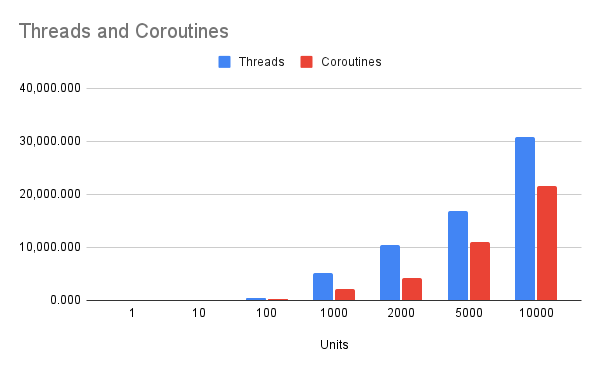

Coroutines Use Less Memory Than Threads in Python
It is commonly stated that coroutines use less memory than threads.
We can explore this statement using experiments and report actual numbers. Results suggest, at least on one modern system, that threads use twice as much memory as coroutines.
In this tutorial, you will discover and confirm that coroutines use less memory than threads.
Let's get started.
Coroutines Use Less Memory Than Threads
One of the benefits often mentioned when comparing coroutines to threads is:
Coroutines use less memory than threads.
The rationale behind this statement is that a coroutine is lightweight compared to a thread.
A coroutine is just a type of Python function that can be suspended and resumed. Whereas a thread is a Python object that represents a "thread" that is created and managed by the underlying operating system.
We can create many coroutines in Python fast and each is just a function. However, can only create threads as fast as the Python runtime can request the underlying operating system create and start new threads.
Each thread has its own stack space.
This is reserved memory to be used by the thread. The default is different for each platform. The minimum might be 32,768 bytes or 32 KiB and it can be configured in Python via the _thread.stack_size() function. The default is almost certainly more than this on Windows and macOS, probably more like 64 KiB or 128 KiB.
You can learn more about configuring the stack space for threads in the tutorial:
This means, by default, threads will use significantly more memory than coroutines.
Nevertheless, I thought it might be interesting to explore how to compare the memory usage of threads vs coroutines with some benchmark examples.
We can create a large number of threads and coroutines, take a snapshot of Python memory usage, then compare the results.
The total number of threads and coroutines that can be created on a system will be limited by the amount of main memory available. I have about 64 gigabytes of memory, so it allows a few thousand threads to be created before running out of memory, and perhaps a few hundred thousand coroutines to be created before running out of main memory.
We can take a snapshot of memory usage using the tracemalloc module in the standard library. This won't report the stack space for each thread because that is managed by the operating system, but it will report the memory cost in the Python runtime of threads (e.g. threading.Thread objects) and coroutines (e.g. coroutine functions).
Let's compare the memory usage of coroutines vs threads, starting with threads.
Benchmark Memory Usage of Threads
We can develop an example to benchmark the memory usage of threads in the Python runtime.
In this example, we will define a task that sleeps for one second.
The task will simulate work by iterating 10 times and sleeping for 0.1 seconds (100 milliseconds) each loop iteration.
The task() function below implements this.
# task to run in a new thread
def task():
for i in range(10):
# block for a moment
time.sleep(0.1)
We can then define a benchmark function that takes a number of threads to create as an argument, then creates, runs, and waits for the threads to complete, returning the estimated memory usage of the program.
Threads can be defined via the threading.Thread class and the "target" argument can specify the task() function. We can create the specified number of threads using a list comprehension.
...
# create many threads
tasks = [threading.Thread(target=task) for _ in range(n_threads)]You can learn more about running functions in a new thread in the tutorial:
Threads can be started by calling the start() method, then joined by calling the join() method, returning only once the target thread is terminated.
...
# start many threads
for thread in tasks:
thread.start()
# wait for all threads to finish
for thread in tasks:
thread.join()
We can estimate the memory usage of the program with a given number of threads using the "tracemalloc" module.
At the beginning of the benchmark, we can take a snapshot of memory usage via the tracemalloc.start() function.
...
# record memory usage
tracemalloc.start()Then, about halfway through the program, after all threads have started and have been running for half a second, we can take a snapshot of the total memory usage. Using the tracemalloc.take_snapshot() function.
This may be around the peak memory usage for the given number of threads.
The tracemalloc.take_snapshot() function returns a tracemalloc.Snapshot object with statistics of memory usage.
There is a lot of memory usage data in the tracemalloc.Snapshot, but we can take a crude summary of memory usage by summing the number of bytes for each line.
...
# calculate total memory usage
total_bytes = sum(stat.size for stat in snapshot.statistics('lineno'))We can then convert the bytes to kilobytes and return the value.
...
# convert to kb
total_kb = total_bytes / 1024.0
# return memory usage
return total_kbTying this together, the benchmark() function below will create a given number of threads and return the memory usage it took for them to be created and run seconds.
# benchmark running a given number of threads threads
def benchmark(n_threads):
# record memory usage
tracemalloc.start()
# create many threads
tasks = [threading.Thread(target=task) for _ in range(n_threads)]
# start many threads
for thread in tasks:
thread.start()
# wait a moment
time.sleep(0.5)
# take a snapshot while all threads are running
snapshot = tracemalloc.take_snapshot()
# wait for all threads to finish
for thread in tasks:
thread.join()
# calculate total memory usage
total_bytes = sum(stat.size for stat in snapshot.statistics('lineno'))
# convert to kb
total_kb = total_bytes / 1024.0
# return memory usage
return total_kb
Finally, we can call our benchmark() function with different numbers of threads and report the result in seconds.
We will try different numbers of threads from one to 10,000.
...
# define number of threads to test creating
n_benchmark = [1, 10, 100, 1000, 2000, 5000, 10000]
# benchmark creating different numbers of threads
for n in n_benchmark:
# perform benchmark
sec = benchmark(n)
# report result
print(f'> threads={n:5} took {sec:.3f} seconds')
Tying this together, the complete example of benchmarking the memory usage to create and run threads is listed below.
# SuperFastPython.com
# benchmark memory usage of creating threads
import time
import threading
import tracemalloc
# task to run in a new thread
def task():
for i in range(10):
# block for a moment
time.sleep(0.1)
# benchmark running a given number of threads threads
def benchmark(n_threads):
# record memory usage
tracemalloc.start()
# create many threads
tasks = [threading.Thread(target=task) for _ in range(n_threads)]
# start many threads
for thread in tasks:
thread.start()
# wait a moment
time.sleep(0.5)
# take a snapshot while all threads are running
snapshot = tracemalloc.take_snapshot()
# wait for all threads to finish
for thread in tasks:
thread.join()
# calculate total memory usage
total_bytes = sum(stat.size for stat in snapshot.statistics('lineno'))
# convert to kb
total_kb = total_bytes / 1024.0
# return memory usage
return total_kb
# define number of threads to test creating
n_benchmark = [1, 10, 100, 1000, 2000, 5000, 10000]
# benchmark running different numbers of threads
for n in n_benchmark:
# perform benchmark
total_kb = benchmark(n)
# report result
print(f'> threads={n:5} used {total_kb:.3f} KiB')
Running the example benchmarks the memory usage to create and run different numbers of threads.
The sizes are specific to my system and limited by CPU speed and total memory.
We can see that as the number of threads is increased, we see an increase in the memory used.
We might estimate from these numbers that one threading.Thread object is about 5 KiB, showing 1, 10, 100, and 1,000 threads require about 5KiB, 50KiB, 500KiB, and 5,000KIB respectively. And this trend continues.
We can see that 10,000 threads require about 30 megabytes.
> threads= 1 used 7.848 KiB
> threads= 10 used 63.902 KiB
> threads= 100 used 536.400 KiB
> threads= 1000 used 5166.721 KiB
> threads= 2000 used 10434.921 KiB
> threads= 5000 used 16939.733 KiB
> threads=10000 used 30808.835 KiBNote, another way to benchmark memory usage with tracemalloc would be to call the get_traced_memory() function each iteration to get the peak memory usage and reset_peak() to reset the values. I tried this and it gave similar results.
Next, let's look at the memory usage of coroutines
Benchmark Memory Usage of Coroutines
We can benchmark how much memory is required to create different numbers of coroutines.
In this example, we can update the above example for benchmarking threads to benchmark how long it takes to create and run coroutines.
Firstly, the task() function needs to be updated to be a coroutine using the "async def" expression. The call to sleep must suspend the task and call the asyncio.sleep() function using the "await" expression.
The updated task() coroutine function is listed below.
# task to run in a new thread
async def task():
for i in range(10):
# block for a moment
await asyncio.sleep(0.1)
You can learn more about the asyncio.sleep() function in the tutorial:
Next, we can update the benchmark() to create and wait for many task() coroutines instead of threads.
Firstly, the benchmark() function can be changed to be a coroutine function using the "async def" expression.
Next, we can create and schedule many coroutines using the asyncio.create_task() function in a list comprehension.
...
# create and schedule coroutines as tasks
tasks = [asyncio.create_task(task()) for _ in range(n_coros)]You can learn more about creating tasks in the tutorial:
We can then wait for all tasks by awaiting the asyncio.wait() function and pass in the list of Task objects.
For example:
...
# wait for all tasks to completes
_ = await asyncio.wait(tasks)You can learn more about the asyncio.wait() function in the tutorial:
Tying this together, the updated benchmark() coroutine function is listed below.
# benchmark running a given number of coroutines coroutines
async def benchmark(n_coros):
# record memory usage
tracemalloc.start()
# create and schedule coroutines as tasks
tasks = [asyncio.create_task(task()) for _ in range(n_coros)]
# wait a moment
await asyncio.sleep(0.5)
# take a snapshot while all threads are running
snapshot = tracemalloc.take_snapshot()
# wait for all tasks to completes
_ = await asyncio.wait(tasks)
# calculate total memory usage
total_bytes = sum(stat.size for stat in snapshot.statistics('lineno'))
# convert to kb
total_kb = total_bytes / 1024.0
# return memory usage
return total_kb
Next, we can define a main() coroutine to perform the benchmarking of different numbers of coroutines from 1 to 100,000.
# main coroutine
async def main():
# define numbers of coroutines to test creating
n_benchmark = [1, 10, 100, 1000, 2000, 5000, 10000, 50000, 100000]
# benchmark creating different numbers of coroutines
for n in n_benchmark:
# perform benchmark
total_kb = await benchmark(n)
# report result
print(f'> coroutines={n:5} used {total_kb:.3f} KiB')
The main() coroutine can then be used as the entry point to the asyncio program.
...
# start the asyncio program
asyncio.run(main())Tying this together, the complete example is listed below.
# SuperFastPython.com
# benchmark of starting coroutines
import tracemalloc
import asyncio
# task to run in a new thread
async def task():
for i in range(10):
# block for a moment
await asyncio.sleep(0.1)
# benchmark running a given number of coroutines coroutines
async def benchmark(n_coros):
# record memory usage
tracemalloc.start()
# create and schedule coroutines as tasks
tasks = [asyncio.create_task(task()) for _ in range(n_coros)]
# wait a moment
await asyncio.sleep(0.5)
# take a snapshot while all threads are running
snapshot = tracemalloc.take_snapshot()
# wait for all tasks to completes
_ = await asyncio.wait(tasks)
# calculate total memory usage
total_bytes = sum(stat.size for stat in snapshot.statistics('lineno'))
# convert to kb
total_kb = total_bytes / 1024.0
# return memory usage
return total_kb
# main coroutine
async def main():
# define numbers of coroutines to test creating
n_benchmark = [1, 10, 100, 1000, 2000, 5000, 10000, 50000, 100000]
# benchmark creating different numbers of coroutines
for n in n_benchmark:
# perform benchmark
total_kb = await benchmark(n)
# report result
print(f'> coroutines={n:5} used {total_kb:.3f} KiB')
# start the asyncio program
asyncio.run(main())
Running the example benchmarks how much memory is used when creating and running different numbers of coroutines.
From reviewing the numbers, it seems that a coroutine requires about 2 KiB to be maintained.
For example, 100, 1,000, and 10,000 coroutines require about double the number of kilobytes with about 200, about 2,000, and about 20,000 KiB respectively.
Unlike threads, this might be the extent of the memory usage, as the underlying operating system does not need to manage each coroutine with its own stack space.
> coroutines= 1 used 9.015 KiB
> coroutines= 10 used 40.556 KiB
> coroutines= 100 used 237.902 KiB
> coroutines= 1000 used 2153.204 KiB
> coroutines= 2000 used 4323.462 KiB
> coroutines= 5000 used 10977.071 KiB
> coroutines=10000 used 21546.918 KiB
> coroutines=50000 used 108986.776 KiB
> coroutines=100000 used 222494.277 KiBMemory Comparison Coroutines vs Threads
We can compare the results for the memory usage of threads vs the memory usage of coroutines.
Firstly, let's create a table and compare all of the results side by side.
Units Threads Coroutines
1 7.848 9.015
10 63.902 40.556
100 536.400 237.902
1000 5,166.721 2,153.204
2000 10,434.921 4,323.462
5000 16,939.733 10,977.071
10000 30,808.835 21,546.918
50000 n/a 108,986.776
100000 n/a 222,494.277Generally, a threading.Thread object is about 5KiB and a coroutine object is about 2KiB.
As we increase the number of units of concurrency (threads or coroutines), we use more memory with thread objects than with coroutine objects.
This is not a surprise, but it is nice to confirm this expectation.
Now, we can graph the results to aid in the comparison.
We can cap the results at 10,000 units to avoid a distortion of the plot.

The x-axis is nearly a log scale of the number of units.
The y-axis is memory usage in kilobytes. Dividing a KiB by 1024 gives an estimate in megabytes.
Again, we can see that as the number of units is creased, threads use more memory than coroutines.
We know that this is not the whole story.
If we assume that each thread is pre-allocated a minimum stack space of 32KiB, then we can estimate the memory required for each thread in the previous experiments.
The table below summarizes these estimates in bytes, kilobytes, and megabytes.
Units Size (bytes) Size (KiB) Size (MiB)
1 32,768 32 32
10 327,680 320 0
100 3,276,800 3200 3
1000 32,768,000 32000 31
2000 65,536,000 64000 63
5000 163,840,000 160000 156
10000 327,680,000 320000 313We can see that 1,000 threads require about 32 megabytes.
This is a lot more than the 5 megabytes reported in our above experiments.
Is this real?
Yes.
I confirmed this by checking in "top" and in the "Activity Monitor" for my platform.
I modified the program for the task to take 60 seconds and ran it with just 1,000 threads.
See below for a screenshot of the Python program with 1,000 threads showing about 32 megabytes of memory usage.
I then did the same experiment with 1,000 coroutines.
See the screenshot below.
So in real terms, 1,000 coroutines cost about 16 megabytes, whereas 1,000 threads cost about 32 megabytes.
Still a double in cost, although much more than the previously reported 5 megabytes vs 2 megabytes.
This highlights with real numbers that coroutines use less memory than threads, regardless of the number of units that are created.
The benchmarking has limitations
- Tests were performed using one task type, as opposed to testing different task types.
- Tests were performed once, rather than many times, and averaged or distributions of results were compared.
- Tests were performed on one system, rather than many different systems.
- Tests were performed with a log number of units rather than a linear scale of units.
Try running the benchmarks yourself on your system.
What results do you see?
Let me know in the comments below.
I'd love to see how things compare across different platforms (e.g. I don't have access to a windows machine).
Takeaways
You now know that coroutines use less memory than threads in Python.